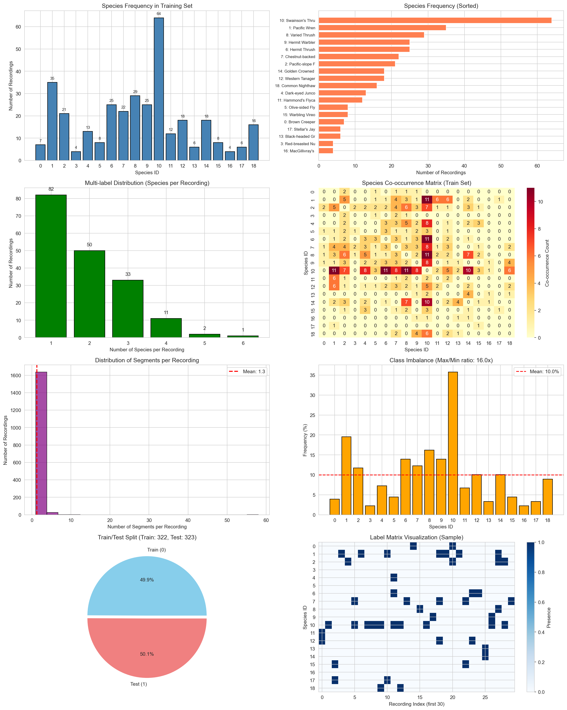

Generated: 2026-03-07 13:37:02
| Species ID | Code | Name | Train Count | Frequency (%) | Bar |
|---|---|---|---|---|---|
| 0 | BRCR | Brown Creeper | 7 | 3.9% | █ |
| 1 | PAWR | Pacific Wren | 35 | 19.6% | █████████ |
| 2 | PSFL | Pacific-slope Flycatcher | 21 | 11.7% | █████ |
| 3 | RBNU | Red-breasted Nuthatch | 4 | 2.2% | █ |
| 4 | DEJU | Dark-eyed Junco | 13 | 7.3% | ███ |
| 5 | OSFL | Olive-sided Flycatcher | 8 | 4.5% | ██ |
| 6 | HETH | Hermit Thrush | 25 | 14.0% | ██████ |
| 7 | CBCH | Chestnut-backed Chickadee | 22 | 12.3% | ██████ |
| 8 | VATH | Varied Thrush | 29 | 16.2% | ████████ |
| 9 | HEWA | Hermit Warbler | 25 | 14.0% | ██████ |
| 10 | SWTH | Swainson's Thrush | 64 | 35.8% | █████████████████ |
| 11 | HAFL | Hammond's Flycatcher | 12 | 6.7% | ███ |
| 12 | WETA | Western Tanager | 18 | 10.1% | █████ |
| 13 | BHGB | Black-headed Grosbeak | 6 | 3.4% | █ |
| 14 | GCKI | Golden Crowned Kinglet | 18 | 10.1% | █████ |
| 15 | WAVI | Warbling Vireo | 8 | 4.5% | ██ |
| 16 | MGWA | MacGillivray's Warbler | 4 | 2.2% | █ |
| 17 | STJA | Stellar's Jay | 6 | 3.4% | █ |
| 18 | CONI | Common Nighthawk | 16 | 8.9% | ████ |
| Metric | Value |
|---|---|
| Recordings with 1 species | 82 (45.8%) |
| Recordings with 2 species | 50 (27.9%) |
| Recordings with 3+ species | 47 (26.3%) |
| Average species per recording | 1.91 |
| Feature Type | Dimensions | Description |
|---|---|---|
| Segment Features | 38 per segment | Per-segment audio features (spectral, temporal) |
| Segment Histogram | 100 per recording | Bag-of-segments (k-means++ codebook) |
| Segment Rectangles | 4 per segment | Bounding boxes (xmin, ymin, xmax, ymax) |

Recommended: Stratified K-Fold (K=5) on the training set, stratified by the most imbalanced classes.
Reason: Competition provides fixed train/test split. Internal CV needed for hyperparameter tuning.
Metric: ROC-AUC (per-label), averaged across all 19 species.
rec_id filename 0 rec_id,filename NaN 1 0,PC1_20090513_050000_0010 NaN 2 1,PC1_20090513_070000_0010 NaN 3 2,PC1_20090606_050012_0010 NaN 4 3,PC1_20090606_070012_0010 NaN 5 4,PC1_20090705_050000_0010 NaN 6 5,PC1_20090705_070000_0010 NaN 7 6,PC1_20090804_050011_0010 NaN 8 7,PC1_20090804_070012_0010 NaN 9 8,PC1_20100513_043000_0010 NaN
rec_id n_species species_present 2 2 2.0 [11, 12] 5 5 1.0 [10] 13 13 2.0 [15, 17] 18 18 1.0 [1] 19 19 1.0 [2]
rec_id segment_id [feature vector] 2 0 0.954148 0.938716 0.403581 0.508965 0.000536 0.067958 0.000000 0.001418 0.000001 0.009373 0.407843 0.352941 24.048851 7.664318 91.0 115.0 24.0 18.0 348.0 73.0 15.313218 0.805556 0.067227 0.000000 0.184874 0.042017 0.067227 0.067227 0.025210 0.008403 0.084034 0.008403 0.067227 0.134454 0.008403 0.033613 0.058824 0.142857 1 0.941444 0.963083 0.397784 0.503964 0.000328 0.064116 0.000000 0.000520 0.000000 0.008495 0.403922 0.517241 23.310722 7.340112 92.0 111.0 19.0 30.0 457.0 92.0 18.520788 0.801754 0.016854 0.005618 0.044944 0.067416 0.112360 0.252809 0.000000 0.005618 0.022472 0.011236 0.028090 0.134831 0.028090 0.219101 0.022472 0.028090 2 0.965339 0.913682 0.446249 0.530913 0.000977 0.069738 0.000002 0.000856 0.000002 0.009757 0.466667 0.333333 24.411079 8.615371 98.0 130.0 32.0 13.0 343.0 70.0 14.285714 0.824519 0.180451 0.045113 0.082707 0.045113 0.037594 0.030075 0.052632 0.007519 0.135338 0.022556 0.082707 0.022556 0.015038 0.022556 0.045113 0.172932